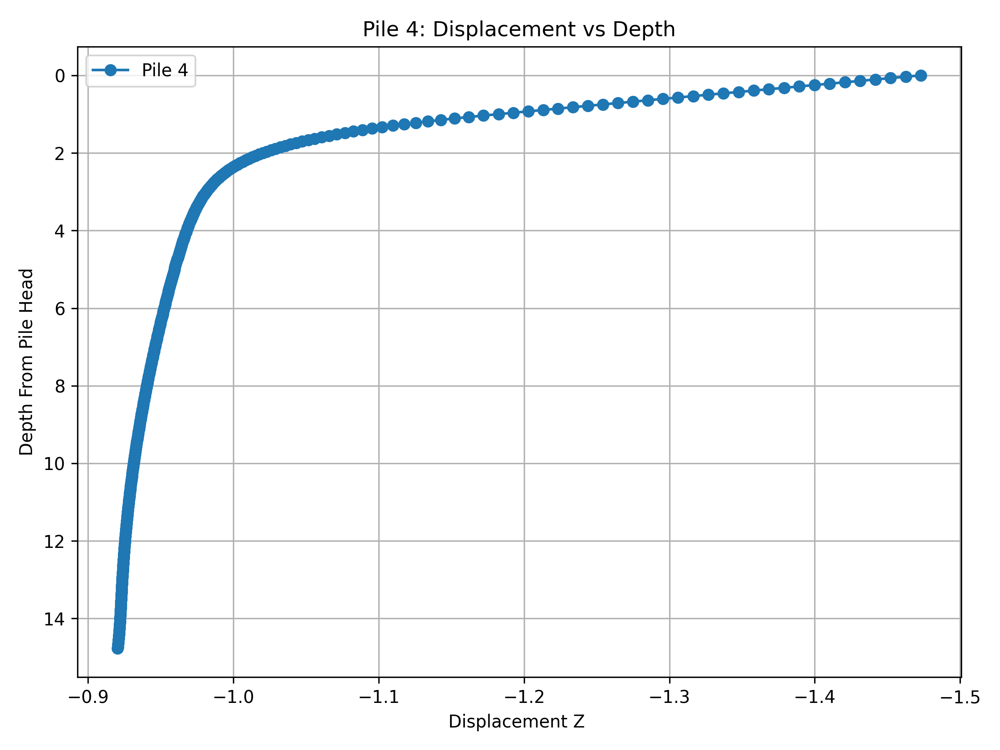
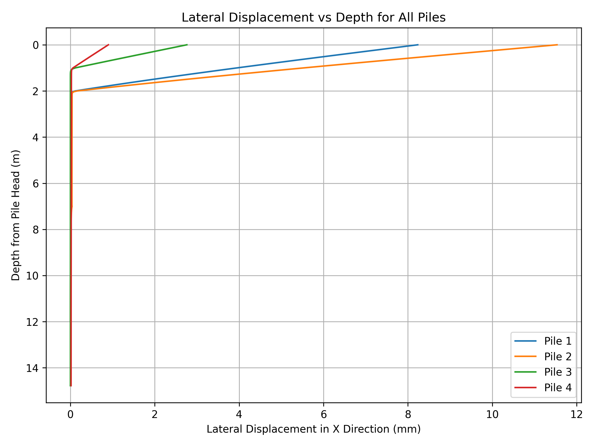

Results Analysis (Pile Analysis)#
Download the LatAxPileAnalysis.rspile2 for this example.
Code Snippet: Visualization of Pile Analysis Results#
from rspile_scripting.RSPileModeler import RSPileModeler
from rspile_scripting.enums import *
import os, inspect
import matplotlib.pyplot as plt
current_dir = os.path.dirname(os.path.abspath(inspect.getfile(lambda: None)))
RSPileModeler.startApplication(
overridePathToExecutable=os.getenv("PATH_TO_RSPILE_CPP_REPO") + "\\Build\\Debug_x64\\RSPile.exe",
port=60044
)
rspile_modeler = RSPileModeler(60044)
model = rspile_modeler.openFile(rf"{current_dir}\example_models\LatAxPileAnalysis.rspile2")
model.save()
model.compute()
results_tables = model.getPileResultsTables(GraphingOptions.DEPTH_FROM_PILE_HEAD, GraphingOptions.DISPLACEMENT_X, GraphingOptions.AX_LAT_DISPLACEMENT_Z)
pile_4_results = results_tables["Pile 4"]
#create a plot of the displacement (z) vs depth for Pile 4
depth_pile_4 = pile_4_results[pile_4_results.getColumnName(GraphingOptions.DEPTH_FROM_PILE_HEAD)]
displacement_pile_4 = pile_4_results[pile_4_results.getColumnName(GraphingOptions.AX_LAT_DISPLACEMENT_Z)]
plt.figure(figsize=(8, 6))
plt.plot(displacement_pile_4, depth_pile_4, marker='o', label='Pile 4')
# Customize the plot
plt.xlabel(pile_4_results.getColumnName(GraphingOptions.AX_LAT_DISPLACEMENT_Z))
plt.ylabel(pile_4_results.getColumnName(GraphingOptions.DEPTH_FROM_PILE_HEAD))
plt.gca().invert_yaxis()
plt.gca().invert_xaxis()
plt.title("Pile 4: Displacement vs Depth")
plt.grid(True)
plt.legend()
plt.tight_layout()
plt.savefig("pile_4_displacement_vs_depth.png", dpi=300)
plt.figure(figsize=(8, 6))
for pile_name, pile_results in results_tables.items():
# Extract Depth and Lateral Displacement (X) for each pile
depth_pile = pile_results[pile_results.getColumnName(GraphingOptions.DEPTH_FROM_PILE_HEAD)]
displacement_pile = pile_results[pile_results.getColumnName(GraphingOptions.DISPLACEMENT_X)]
plt.plot(displacement_pile, depth_pile, label=pile_name)
plt.xlabel("Lateral Displacement in X Direction (mm)")
plt.ylabel("Depth from Pile Head (m)")
plt.gca().invert_yaxis()
plt.title("Lateral Displacement vs Depth for All Piles")
plt.grid(True)
plt.legend()
plt.tight_layout()
plt.savefig("all_piles_displacement_vs_depth.png", dpi=300)
plt.close('all')
model.save()
model.close()
rspile_modeler.closeApplication()
Figures#

Displacement vs Depth for Pile 4.#

Displacement vs Depth for all piles.#